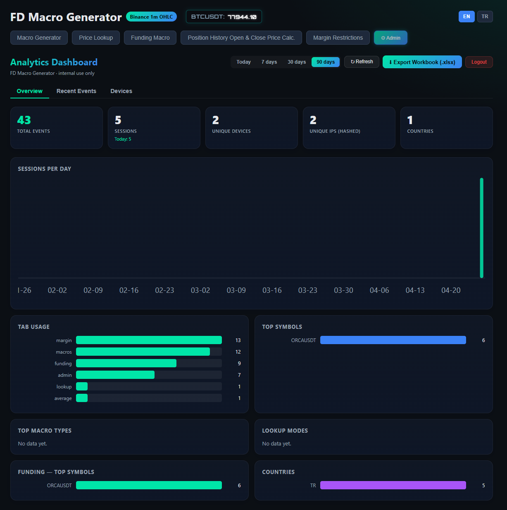
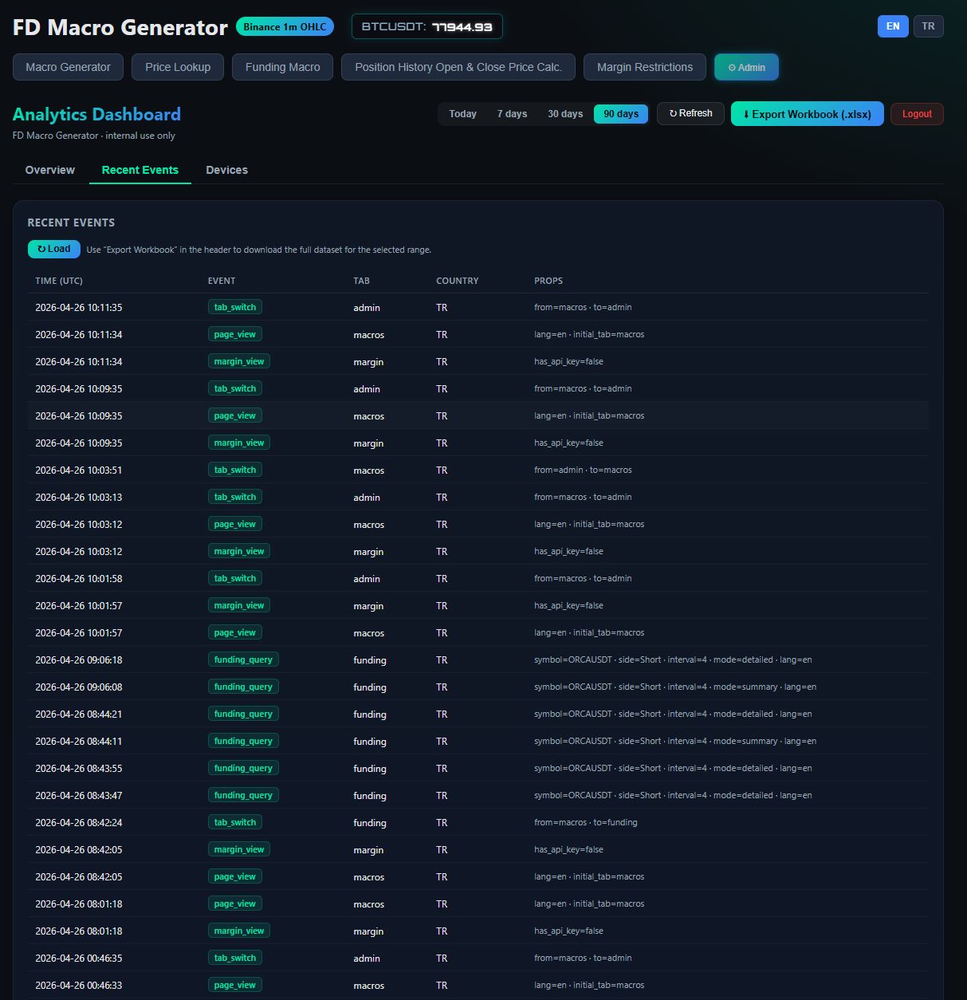
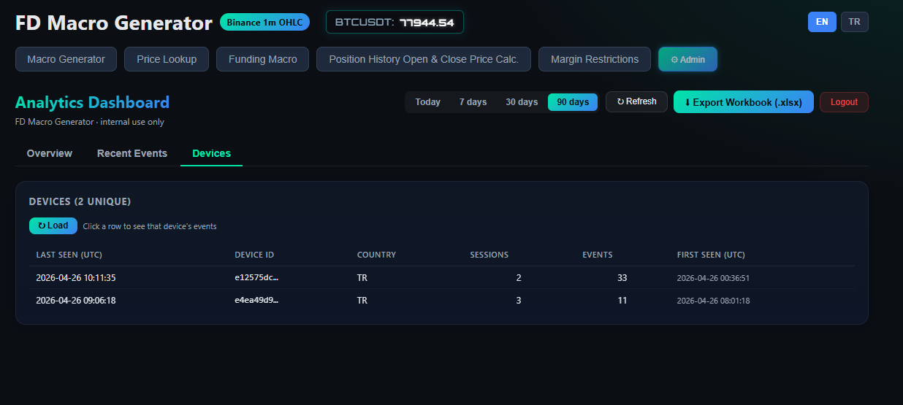
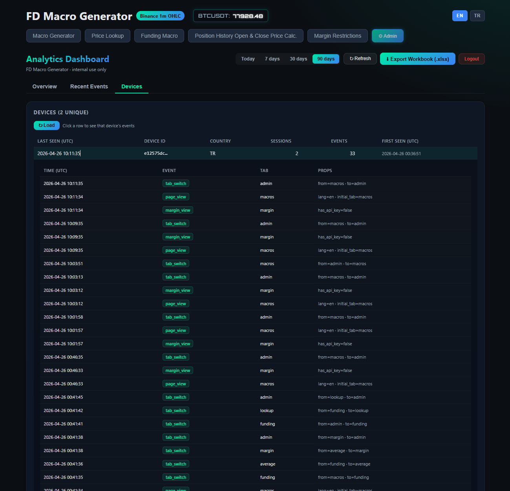
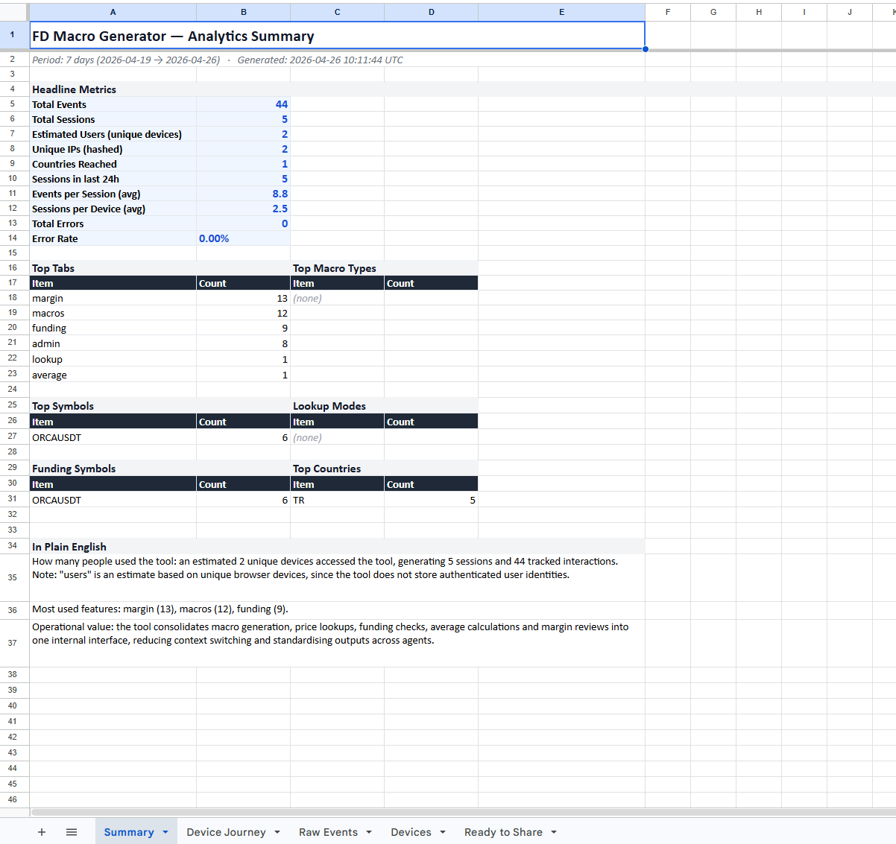
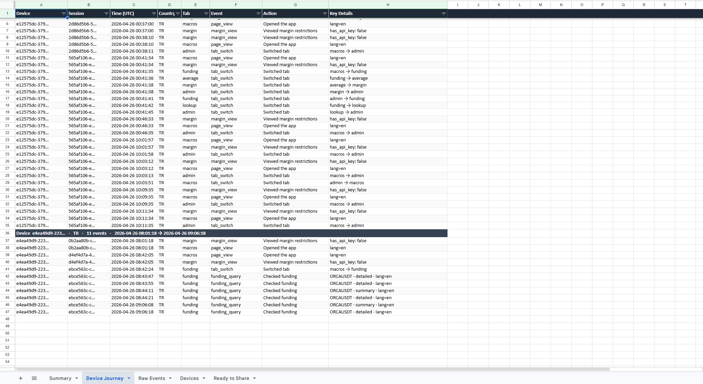
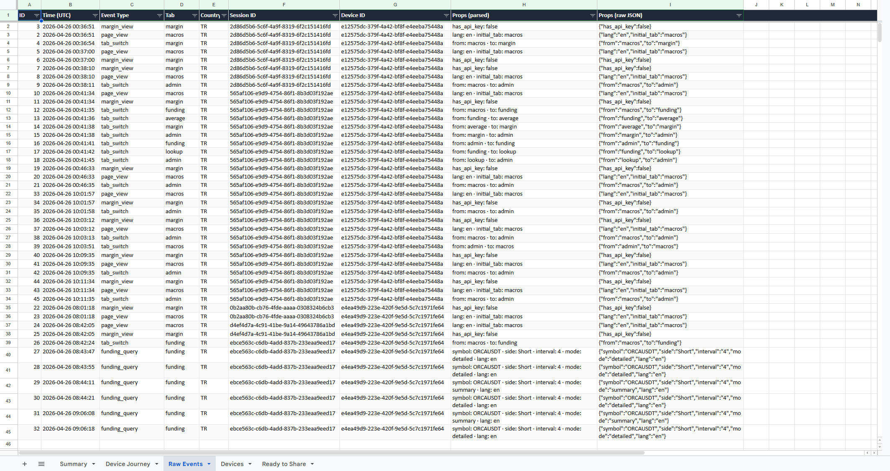
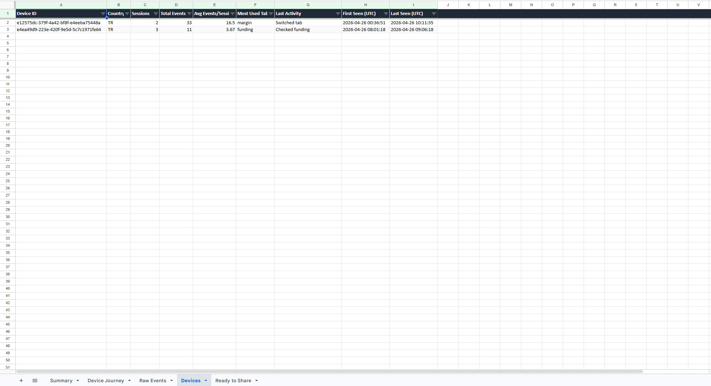
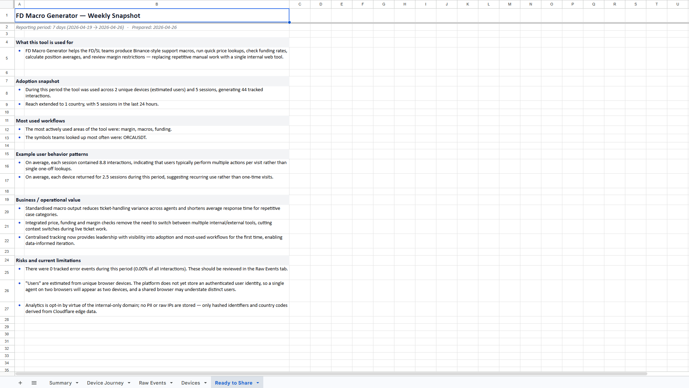

A walkthrough of what I built, why each section exists, and how it helps the team make better decisions — written for leadership review.
Prepared by Görkem Tikiç · FD Macro Generator project
Document version 1.0 · April 2026
Why I built this
The FD Macro Generator started as a tool to standardise the macros our agents send out, but once it was used daily I realised we had no visibility into how it was actually being used. I built this analytics layer so leadership and I can see real adoption, identify which workflows save time, and catch issues before users complain. Everything is privacy-respecting, internal-only, and runs on a free-tier infrastructure that costs us nothing.
The problem I wanted to solve
Before this, I could not answer simple questions in our weekly meetings: how many people are actually using the tool, which features matter, where are agents getting stuck. I was relying on word-of-mouth feedback, which is not enough to defend or grow an internal tool.
What I wanted leadership to see
An honest, evidence-based view of adoption and value. Not vanity metrics, not made-up KPIs — real interactions tied to real workflows, presented in a way that anyone in the room can read in under a minute.
What I wanted the team to get
A way to spot which features deserve more polish, which ones are unused (and should be removed or rethought), and which workflows are repeated so often that they justify dedicated automation.
What I refused to do
Track personal data, store raw IPs, or ship third-party trackers. The system stores only hashed identifiers, country codes from Cloudflare's edge, and event types — nothing that can identify a specific person.
The Admin Dashboard — three operational views
The dashboard lives behind a bearer-token gate (only people with the admin token see it). It has three views, each answering a different management question.
Tab 1 · Overview
"Is the tool being used, and what for?"
This is the page I open first every morning. It is a single-screen health check designed to answer adoption questions in seconds.
What you see, top to bottom
Five headline KPIs — total events, sessions, unique devices, hashed unique IPs, and country reach. The "Sessions" card also shows today's count so I can immediately see whether the tool is being used right now.
Sessions per day chart — a clear trend bar chart, gap-filled across the selected range so a quiet day shows as zero rather than disappearing. This is how I notice whether usage is growing, plateauing, or dipping.
Tab usage — which areas of the tool people actually open. This is my single most-used signal: it tells me where to invest engineering time.
Top symbols, macro types, lookup modes, funding symbols — what users are actually checking. If "ORCAUSDT" dominates funding queries, that is a real-world signal that we should make funding workflows around that asset frictionless.
Country distribution — confirms the tool is reaching the teams it was built for.
Recent errors — the only place errors surface to me without me asking. If something starts failing in production I see it here before a user reports it.
Why this tab exists
I wanted an "executive at-a-glance" page. If a manager opens the dashboard for ten seconds, they should walk away knowing whether the tool is alive, growing, and free of fires. That is the entire purpose of Overview.
Time-range selector
Today, 7 days, 30 days, 90 days. Every chart and KPI updates instantly.
Refresh
Pulls fresh data on demand from the analytics backend.
Privacy posture
Country comes from Cloudflare's edge headers; IPs are SHA-256 hashed and truncated before storage.

Overview tab — KPIs, daily trend, and feature breakdowns on one screen.
Tab 2 · Recent Events
"What just happened in the tool?"
Where Overview answers "is it healthy?", Recent Events answers "what exactly are users doing right now?". This is the operational firehose.
What you see
A timestamped feed of every recorded interaction — page views, tab switches, macro generations, lookups, funding queries, calculator runs, margin views, and errors.
Each row shows the tab the user was in, the country, and the parsed properties (the symbol they queried, the macro type they generated, the language they were using, and so on).
The view shows the most recent activity first, so a glance tells you whether the tool is currently in use.
Why this tab exists
This is a debugging and verification tool. Two scenarios I built it for:
Sanity-checking new features. When I ship a new macro type, I open this tab and watch it appear in real activity. If it does not show up, the instrumentation is wrong, or nobody is using it yet — both useful to know.
Investigating reports. When someone says "the tool didn't work for me", this is where I look first. The event stream usually shows me exactly what they did, in what order, and where it broke.
For deeper analysis I no longer rely on this view — I export the workbook (next section) which contains the full dataset for the selected range, not just the most recent activity.

Recent Events — every interaction with timestamp, event type, tab, country, and parsed properties.
Tab 3 · Devices
"How many real people are actually using this — and what are they doing?"
Every browser the tool is opened in gets a stable, anonymous identifier stored locally on that device. We do not track names, accounts, or IPs — but we can tell that this same person came back tomorrow, and we can summarise their behaviour without ever knowing who they are.
What you see
One row per unique device, ordered by most recent activity.
Per device: country, total sessions, total interactions, and first/last seen timestamps.
Click any row and it expands inline to show that device's complete activity timeline — which tab they opened, what they generated, what they looked up, and in what order.
Why this tab exists
This is the tab I am most proud of, because it directly answers the question every manager asks: "are these real users or just one person clicking around?". The answer is now visible in seconds.
It also shows retention: if the same device returns over multiple days, the tool is sticky. If devices appear once and never come back, we have an onboarding problem.
It shows engagement depth: a device with 30 events across 3 sessions is using the tool seriously; one with 1 event in 1 session is just curious.
Honest framing
I always present "devices" rather than "users", because one person on two browsers will appear as two devices. I would rather under-promise than mislead leadership with an inflated user count.

Devices tab — one row per unique device with country, sessions, total events, and first/last seen.

Click a device row to expand its full activity timeline — exactly which tabs they opened and what they did.
Export Workbook (.xlsx) — five sheets in one click
The "↓ Export Workbook (.xlsx)" button in the dashboard header generates a fully styled Excel file that contains everything for the selected date range. It is the single artefact I want to bring to leadership meetings instead of screenshots.
Why I replaced the old CSV exports. The previous version exported two separate raw CSV files — useful for spreadsheets, useless for presenting. The new export is one workbook, professionally styled, with sheets organised from "executive overview" down to "raw audit data". Leadership reads the first sheet; analysts can dig down to the last.
Sheet
What it answers
Audience
Summary
Headline KPIs, breakdowns by tab/macro/symbol/country, plus a plain-English narrative section.
Leadership (1-minute read)
Device Journey
Each device's activity timeline, grouped and time-ordered, with technical events translated into human-readable actions.
Anyone who wants to see how users move through the tool
Raw Events
Flat table of every event with parsed and raw JSON columns. Filterable, frozen header, audit-ready.
Analysts, debugging
Devices
One row per device with derived metrics: avg events per session, most-used tab, last activity.
Adoption / retention review
Ready to Share
Pre-written executive summary in business English, populated with the actual numbers from the selected period.
Weekly FD/SL leadership meetings
Sheet 1 · Summary
The one-minute read
Designed so anyone can open the file, glance at the first sheet, and walk away informed.
Headline metrics: total events, total sessions, estimated users (unique devices), unique hashed IPs, countries reached, sessions in the last 24 hours.
Derived ratios that I find more useful than raw counts: events per session (engagement depth), sessions per device (retention), total errors and error rate (reliability).
Six side-by-side breakdowns: top tabs, top macro types, top symbols, lookup modes, funding symbols, top countries.
"In Plain English" section at the bottom — three to five sentences that explain the numbers without jargon, including an honest caveat about how "users" are estimated from devices.
Why this matters: I have sat in meetings where people stare at a wall of numbers and disengage. This sheet is built so the numbers tell a story, not the other way around.

Summary sheet — headline metrics, breakdowns, and a plain-English narrative at the bottom.
Sheet 2 · Device Journey
The most important presentation sheet
Each device is rendered as its own grouped block, with a dark separator row that names the device, its country, the number of events, and the time span. Inside the block, every interaction is listed in order with a human-readable label.
Technical event names are translated: macro_generated becomes "Generated macro", lookup_query becomes "Ran price lookup", funding_query becomes "Checked funding", and so on.
The "Key Details" column extracts the meaningful pieces from the raw payload (the symbol, the macro type, the language) and presents them as readable text.
Tab transitions are shown explicitly ("macros → admin"), so you can literally watch a person navigate the tool.
Why this matters: when I show this sheet to leadership, the conversation stops being abstract. You can see a real person open the app, switch to the funding tab, check ORCAUSDT in summary mode, then in detail mode, then leave. That is far more convincing than any percentage.

Device Journey — each device gets its own grouped block with technical events translated to readable actions.
Sheet 3 · Raw Events
The audit trail
A flat table of every event in the selected period — event ID, timestamp, type, tab, country, session and device IDs, plus both a human-readable and a raw-JSON view of the properties.
Frozen header row and Excel filters on every column, so anyone can slice and sort without me being there.
Both parsed and raw JSON are kept side by side so that no information is lost in translation.
Why this matters: if someone in the meeting questions a number on the Summary sheet, I can answer it from this sheet immediately, in the same file, with no follow-up needed. It also serves as a permanent audit record of the period.

Raw Events — flat, filterable audit table with parsed and raw JSON columns side by side.
Sheet 4 · Devices
Adoption at the device level
One row per device, with the four core metrics (sessions, total events, first/last seen) plus three derived columns I added for management readability:
Average events per session — engagement depth at the device level.
Most-used tab — what this device cares about most.
Last activity — the human-readable label of the most recent thing they did.
Why this matters: this sheet exposes long-tail behaviour. If two devices generate 80% of the activity, that is a critical finding — it means the tool is loved by a small group. If activity is evenly distributed, the tool has broad adoption. Both are valid; both should drive different decisions.

Devices sheet — one row per device with derived metrics like avg events per session and most-used tab.
Sheet 5 · Ready to Share
The slide I do not have to write
This is a leadership-ready narrative, generated automatically from the actual numbers of the selected period. I built it so that the version of the story I share verbally and the version embedded in the file are the same.
What this tool is used for — one paragraph, plain English, business framing.
Adoption snapshot — devices, sessions, interactions, country reach, sessions in the last 24 hours.
Trend — usage is automatically labelled growing, stable, or declining based on the first half vs. second half of the period.
Most used workflows — the actual top tabs, macros, and symbols, written into sentences.
Behaviour patterns — average interactions per session, average sessions per device.
Business / operational value — three concrete points on why this tool helps the team.
Risks and current limitations — the error count, the device-vs-user honesty caveat, and the privacy stance.
Why this matters: I built this so a manager can literally screenshot it and drop it into a deck. The story is consistent, the numbers are real, and the limitations are admitted up-front — which is the only way to build trust in internal metrics.

Ready to Share — the executive narrative, populated automatically from the period's actual numbers.
How this is built — and why it costs us nothing
The whole analytics stack runs on infrastructure that is either free or already paid for, with no vendor lock-in:
Frontend — the existing FD Macro Generator React app, hosted free on GitHub Pages. The analytics client is a small module that fires events as people use the tool.
Backend — a single Cloudflare Worker (free tier: 100,000 requests/day, far above our usage). It receives events, hashes the IP, reads the country from Cloudflare's edge headers, and writes to storage.
Database — Cloudflare D1 (SQLite at the edge, also free at this scale). Stores event records keyed by anonymous device and session IDs.
Admin access — gated by a bearer token that only I (and anyone I share it with) hold. The admin tab is invisible without it.
Workbook generation — runs entirely in the browser when "Export Workbook" is clicked. No server, no upload, no third party sees the data.
What this means in plain terms
No recurring cost at our current and projected usage levels.
No third-party tracker — the data never leaves infrastructure I control.
No PII — we cannot identify a specific person from the stored data, by design.
Reproducible — the entire system is in version control; any future engineer can rebuild it.
What I would like leadership to take away
This is not just a chart on a screen. It is a feedback loop that lets us decide where to invest time on the tool, demonstrates the FD/SL team is using a real internal product, and gives you concrete numbers you can defend in any forum. The next versions will add per-feature time-on-task tracking and, if we want it, satisfaction scoring after macro generation — both straightforward to add on top of the foundation that is now in place.
— Görkem Tikiç
FD Macro Generator · Analytics Dashboard Guide · April 2026 · Internal use only.